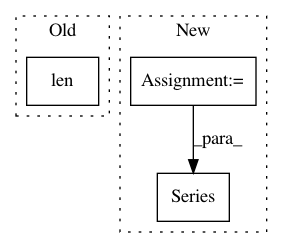

d5fe1575d0b6e620e767d666e13a00cd5078dcb0,skgenome/intersect.py,,into_ranges,#Any#Any#Any#Any#Any#,48
Before Change
return summary_func(ser)
return pd.Series([(series2value(src_rows[src_col])
if len(src_rows) else default)
for _bin, src_rows in by_ranges(source, dest, "outer",
True)])
After Change
column = source[src_col]
result = [series2value(column[slc])
for slc in iter_slices(source, dest, "outer", True)]
return pd.Series(result)
def iter_ranges(table, chrom, starts, ends, mode):
Iterate through sub-ranges.
In pattern: SUPERPATTERN
Frequency: 3
Non-data size: 3
Instances
Project Name: etal/cnvkit
Commit Name: d5fe1575d0b6e620e767d666e13a00cd5078dcb0
Time: 2018-07-02
Author: etalevich@dnanexus.com
File Name: skgenome/intersect.py
Class Name:
Method Name: into_ranges
Project Name: scikit-learn-contrib/categorical-encoding
Commit Name: 374ca541aaf62aba88a144acbbc7398ca3e995ef
Time: 2018-11-26
Author: jcastaldo08@gmail.com
File Name: category_encoders/ordinal.py
Class Name: OrdinalEncoder
Method Name: ordinal_encoding
Project Name: QUANTAXIS/QUANTAXIS
Commit Name: 29865affe8cbd0b81c755e7b8fe4c58aa561f56a
Time: 2017-10-12
Author: yutiansut@qq.com
File Name: QUANTAXIS/QAIndicator/base_func.py
Class Name:
Method Name: IF